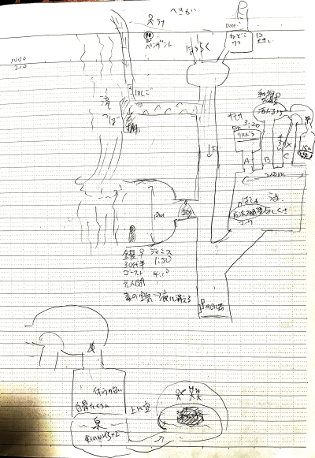

我々はGW真っ只中の朝10時に某カラオケ店に集合しました。
よく集まりましたね暇だったんでしょうか(お前もな)。
昼までひたすらキャラ作成。
ルルブ持ってない人が何人かいたので
「近くに売ってると思うから今から買ってくる？」
「あ、私の分もおねがいします」
「私も」
GM「俺暇だから買ってくるわその間お前らキャラ作ってろ」
てな感じにｗ
GM「では自己紹介をしてください」
「私は悲しみの青バラ(芝居がかった口調で)。本名は不明です、ブルーローズと呼んで下さい。種族はナイトメア、技能はプリースト2グラップラー1です。顔にこう、薔薇型のアザがあります」
GM「中二病全開ですね」
ここでお昼ごはん。
「ナナシです。カタカナでナナシです。お腹が空いてこのパーティーに拾われました。一宿一飯の恩！種族はシャドウ、技能はフェンサー3スカウト1」
「タビットです。フェアリーテイマー2セージ1。蛮族にお父さんをパイにされて食べられたので復讐しようとしてます。名前はピーター」
「蛮族はマクレガーさんだった」
「みぞれです。死んだ製作者の息子がバカすぎて家出してきました。種族はルーンフォーク、技能はマギテック2シューター1レンジャー1です」
ナナシ「誰に拾われたか決めよう(ころころ)みぞれに拾われました」
みぞれ「私も誰に仕えるか決めます(ころころ)ブルーローズさんです」
ナナシ「俺は実質ブルーローズに拾われたことに」
みぞれ「マスター、この人が落ちてたんですけどどうされますか？」
青薔薇「まあこれは大変！ピーター、何か食べ物を差し上げなさい」
そんなわけで状況的にこのパーティーのリーダーはブルーローズになりました。
そんなパーティーに蛮族討伐の依頼が入りました。
青薔薇「わたくし達の英雄譚の第一歩となるこの依頼、受けようではありませんか！」
みぞれ「このパーティーの資金状態ですが、とても厳しいです。受ける以外ないと思います」
GM「秘書ぽい」
ナナシ「食べ物もぐもぐー」
みぞれ「特に大食いにはその分働いていただかないと」
ナナシ「むぐ！？」
ピーター「あの、討伐対象の持ち物は貰ってもいいですか？(冷静)」
酒場の主人「依頼主と直接交渉してください」
てことで依頼主の町長さんとお話。
ナナシ「クッキーもしゃあ」
町長「ほほう、クッキーがお好きかね？これ！(手をパンパン)クッキーを持てい！」
4人の冒険者たちの拠点となっていた町をゴブリンが襲撃しようとしているという話があるらしく、
近くの森を拠点としているそいつらを殲滅するのが目的。
そこには入口が2つあり、片方は森に、もう片方は30年前に滅びた集落の涸れ井戸にあるとのこと。
蛮族から手に入るものは自分たちのものとしてもよい、
但し町の襲撃の計画書があれば渡してくれとのこと。
2日かけて集落へ向かい、そこに井戸があるのを発見しました。
ロープを垂らし、降りようとします。
判定が必要なので、成功率の高いナナシから降りることになりました。
ナナシは失敗しました。
スカウトの受け身判定でなんとか軽減。
続く3人は全員成功。
ナナシ「あれー？」
井戸の底には横道があり、そこを進んでいくと、
何やら英雄が蛮族を倒してどーのこーのみたいな英雄譚の壁画がありました。
何かものすごいデジャヴを感じる私。
しばらく行くと白骨死体がありました。子供のもののようです。
ナナシとみぞれが探索しましたがどちらも失敗。
仕方がないのでブルーローズがレクイエムを歌って去ります。
バードスキルがあれば取りたいそうなので次回はルルブII使いましょうｗ
壁画ゾーンを抜けると、そこは不安定な足場が川の上に渡してある場所でした。
川の流れが速いため、誤って川に落ちないよう慎重に進みます。
..なんか、またものすごいデジャヴを感じました。
以前、こんな感じのところで、誰かが盛大に流された気がする…
不安定な足場の最後には鉄のハシゴがありました。
ハシゴを下に降ります。
降りたところは岩棚でした。コウモリが襲ってきました。
チュートリアル戦闘開始です。
ピーター「あ、私はMP温存するんで何もしません」
みぞれ「せっかくだから撃ちます。MP1と弾丸を消費してソリッドバレット。あっクリティカル」
2発の弾丸がコウモリを撃ち落としました。
この前に前衛2人も攻撃してた記憶はあるけど
元々レポート書くつもりなかったんで覚えてないんじゃあ…
ていうか私、前にもここでクリティカル無駄に回して敵を葬ってた気がするんだよね…
ともかく、岩棚からはまた横穴があり、通路にはあちこちに土砂が積み上げられています。
適度に警戒しながら進むと、T字路に出ました。
北に進むか、南に進むか。
私「待って、ごちゃごちゃしてきた、マッピングするわ」

そうしてここまでの簡易マップができました。都合上最後までマッピングしたものを載せています。にしても汚いなぁ…
とりあえず南に進むことにします。
途中でまた横穴があり、かろうじて人が1人通り抜けられるぐらいの隙間が上に残っていました。
どうもこの先への入口を塞ごうとしている様子。
中を確認してみると、暗視持ちが人影を捉えました。
この人、なんか情報をくれる人だった気がする…！
そう思った私は割とあっさりみぞれちゃんを部屋の中へ進ませます。
この時点で、私はこのシナリオ、多分やったことあると確信しています。
でもこの先がどうだったのか完全に覚えておりませんｗ
進めば思い出すこともあるんでしょうけど…
人影は人間のようでした。何かシクシクと泣いています。
遠くからの呼びかけにも応えないので近づいてみました。
GM「見ましたね？はい判定してください」
一同「！？」
GM「ピーター、セージで魔物知識判定を」
「クトゥルフかと思ったｗ」
ピーター「はい成功」
GM「この女性、ゴーストですね」
一同「！？」
あっれー、おっかしーなー、そんなゴースト相手の戦闘なんかしたっけなー？
身構えましたが、どうやら相手に敵意はない様子。
30年前の蛮族の襲撃で亡くなった人のようです。
殺された娘のことが心残りで、
その子が大切にしていたペンダントを持ってきてもらえれば成仏するかもしれないとのこと。
「あれだな、探索に失敗した子供の骨」
さて、ここで問題が発生しました。
ここまでゲーム時間で大体時間が2時間弱かかっています。
白骨死体まで行って戻ってくると3時間ぐらいかかります。
時間をかけすぎると何か良くないことが起こるかもしれない。
一番足が速くて(全力移動72mだっけ？)スカウト持ちのナナシに
ペンダントを取りにいかせて、残りが未探索エリアを並行して探索することになりました。
もうそこにペンダントがあると知っている、という補正もあり、ナナシはつつがなくペンダントを回収。
その間残りの3人は、ゴーストの部屋の入口から更に南へ、
更に北東への道を見つけ、そのまま南へ行くと出口だという
ゴーストさんからの情報から、分岐を北東へ進むことにしました。
北東には広間があり、馬と馬車と飼い葉がありました。
いざという時にゴブリンにこれを使って逃げられるのを防ぐため、馬車の車輪に罠を施すナナシ。
そこから北には3つの通路がありました。
左は何かがいる気配がします。多分ゴブリンだと判定。
中央と右からは何も聞こえません。
中央から行くと、動物の死骸等がたくさん吊るされていました。
どうやら食料庫のようです。
更にそこから東に道が伸びていました。
聞き耳判定の結果がよかったのか、かすかに何か這い回る音が聞こえました。
しかし、東の部屋は特に何もない様子。
道が南に2本伸びているだけです。どっちかがさっきの3分岐の一番右と繋がってますね。
ここでいい感じの時間になったので引き返してナナシと合流することにしました。
ゴーストさんにペンダントを渡すと、彼女は成仏しました。
そしてその前に、ここには毒の霧が発生する泉があるけど、
毒の霧は夜になると消える、という情報を教えてもらえました。
改めて4人で北東の方角を探索。
3分岐の一番右へ行きます。
通路には謎の白い✕マークがあり、判定で落盤注意の印だとは分かったのですが、
気をつければ大丈夫だというGMの甘言に乗せられそのまま進んでしまいました。
先程見つけた部屋に出た途端、道が崩落。
瞬時に崩落から逃れて部屋内に飛び移ったナナシ以外は9m下に落ちてしまいました。
落ちた先にはお腹を空かせたジャイアントスパイダー。
また、音を聞きつけて奥の部屋から蛮族が沸いてきました。
おそらくゴブリン2匹、と謎の大型蛮族1匹。
あっこれやばいやつ。
と思いきや、フェンサー3レベルと高い敏捷度を活かし、敵の攻撃を1人で避けまくるナナシ。
普通に作った前衛キャラだったらどう考えてももたないわ、なにこれすごい。
当たらなければどうということはない、を地で行ってますね…
私の個人的な傾向なんですけど、大体チュートリアルクエストでいきなりクリティカルをして、
あとはグダグダ、って感じのプレイをするセッションが非常に多いです。
今回も例に漏れず、この戦闘では全ての攻撃を外しました。泣くわ。
クモはピーターが焼いてブルーローズがトドメをさしました。
ブルーローズがトドメをさしたターンでみぞれは北の部屋に上り、
ロープを垂らしましたがピーターは登坂に失敗。
ここでどこかにロープを固定しておく、という宣言をし忘れたため、
ロープは下に落ちてしまう大問題が起こりました。
こういうの気をつけないといかんね…
ナナシは大型蛮族の攻撃で残りHPが1になっていました。
当たらなければどうということはありませんが失敗が怖いです。
大型蛮族はリープスラッシュとか使ってくるのでレベル3はあります。
しかもソーサラー持ちです非常に厄介です。
もちろんヒーリングバレットを使わせてもらいました。
もしもの時の保険用のつもりだったけどねー、こんな有効活用できるとは思わなかったなー。
次のターンでブルーローズが登坂に成功。
ここでロープが下に落ちていることが判明したため、
ピーターがロープを上に放り投げ、みぞれがメジャーアクションで
ピーターを引き上げるという手段を取りました。
最初からこうしていればよかったですねｗ
小型蛮族はピーターが判定成功してゴブリンだと判明しましたが、
大型の方は抜けませんでした。
こいつHPが全然削れないし、ブルーローズが乱戦に突っ込むのは危険なので、
先にゴブリンの頭数を減らすことにしました。
やたらとバニッシュを撃ちたがるブルーローズさんｗ
そうしてなんとか10ターン以上かけて討伐成功です。
相手の強さ的にもうこいつがここのボスじゃね？
という話になったので、途中から割と全力でした。
ナナシがすごい勢いでピンゾロ振りまくっててほんとにもう。
タゲサ＋クリバレを使って外した時は本当に泣きました。
この後もクリバレは1発も当たりませんでした。かなしい。
レンジャースキルで草を使ってなけなしの回復を行い、未探索の奥へ。
奥の部屋には泉と、微かに漂う硫黄のような匂い、そしていくつもの白骨死体が。
これが例の毒の霧に間違いありません。
夜を待ち、ナナシを泉に潜らせました。
まず1回目は、泉の底に落ちている光るカケラを拾ってもらいました。
剣のかけらだったようです。
そして2回目は、泉の底にある横穴の先へ行ってもらいました。
その先には棺と壁画があり、棺の中には剣と謎の羊皮紙が入っていました。
剣は分不相応ということで放置。
羊皮紙によると、この英雄が持っていた魔剣は既に別の場所に移されたようです。
そこから300年？とか経っているようなので、
きっと今頃その魔剣は立派なダンジョンを生成していることでしょう。
(魔剣はダンジョンを生み出す性質がある、という世界観)
わあ、なんかキャンペーンみたい！
羊皮紙には魔動機文明語もあったのでみぞれが読んでみましたが、
読めるけどなんのことやら、みたいな感じらしいです。
持ち帰ってじっくり研究することにいたしましょう。
さて、先程の3分岐です。左の通路の先にいるゴブリンをぶちのめして終わりましょう。
奇襲をかけられないかとか散々わーわー言ってましたが、
奥の部屋に入ってみたら、そこには牢屋に入れられたリルドラケンしかいませんでした。
どうやら彼は商人のようで、先程の馬車は彼のものらしいです。
罠、仕掛けたやんな？
カギを壊して彼を助け出しました。
ピーターが痩せこけたリルドラに食料を分け与えます。
ピーターは用意周到で、キャラ作成時に既に食料を購入していたのですが、
このクエストの依頼主が必要経費として1週間分の保存食をくれたのですね。
ピーター「たくさんあっても腐るから…(ぼそっ)」
そうしてリルドラケンの商人が仲間に加わりました。
そのまま最後の未探索エリア、T字路の北へ向かいます。
はいはい戦闘戦闘。
この時点でかなり時間が足りなくなっていたため、カラオケを30分延長しましたｗ
SWは探索とか始めるとキリない感ありますからね…仕方ないね。
相手はゴブリン2体ボガート1体でした。
ボガートと聞いて震える私(トラウマ)。
ここにきて先制が取れず、全員が乱戦に巻き込まれました。
おかげでみぞれさん初ダメージです。ゴブリン強いよ…
そして同じくターゲットになってしまったピーターが倒れました。
うん、なにこれ、ボス戦じゃないよね？
しかし、この後はナナシがボガートの足止めを、
ブルーローズが先程のボス戦で感覚を掴んだ2回攻撃を繰り出し、なんとか潰しました。
みぞれもここにきてようやく1発当てました。ほんと何だったん…
この数値なら当たるでしょう！って時にGMもいい数値を出したりとか、
それアリアンロッドで2丁拳銃ヴァーナやった時もやられた気がする。
ともかく、戦闘終了です。
応急手当でピーターを起こし、奥の2つの通路を調べます。
左は崩落の危険性があるので進まない方がいいと判断。
右は寝床に続いていました。
大きなベッドが1つ、小さなベッドが6つ。
「ん？あのでかいやつが1匹、ゴブリンが4匹、ボガードが1匹…1匹足りなくない？」
ピーターが地図作成判定をして、今まで作った地図に誤りがないか、
行ったことがない場所がないか調べますが、特にないです。
答：ゴーストが子供殺された憎さでゴブリン1匹川に引きずり込んでた
更に30年前も同じくゴブリン3匹引きずり込んでた
で、先程のボス戦で小さなカギを手に入れていたのですが、これを使う場所がありません。
この寝床に何かあるかもしれません。調べましょう。
GM「探索判定です、失敗したら泣き叫んでください」
— たかみん/りんと (@r_takamine) 2017年3月19日
スカウト「ころころ…ぴゃーーー」
レンジャー「ころころ…ぴゃーーー」
プリースト「素目で振っていいですか？…ぴゃーーー」
フェアリーテイマー「一応…ぴゃーーー」
NPC「では私も…ぴゃーーー」
「依頼主に、迷宮で見つけた謎の鍵を地図と一緒に渡しておきましょう、確認しに行った人たちの誰かが探索判定成功してくれるでしょう」
— たかみん/りんと (@r_takamine) 2017年3月19日
「失敗失敗失敗失敗失敗失敗」
「ぴゃーーーぴゃーーーぴゃーーーぴゃーーーぴゃーーーぴゃーーー」
これは酷いｗ
ともかく、そんなわけで、何も見つけることができなかったので、
リルドラさんの馬車の罠を外して、馬車に乗って町まで帰りましたとさ。
そして後日、殲滅確認に行った人たちが、例の寝床で宝箱と、その中に入っている襲撃計画書を見つけたらしい。
青薔薇「その探索成功した方はどなたですの！？仲間に加わっていただきたいですわ！」
今日もパーティーは平和です。
色々書き忘れてる部分もあると思うけど、終わり！